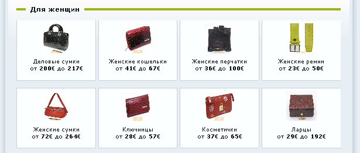

38. ѕоказ глобальной витрины на
главной:
ѕоказывать или нет витрину магазина на главной
странице (на витрине показываютс€ только товары с фотографи€ми и
именно последние из добавленных товаров в каждом разделе - этим самым
вы можете регулировать что именно будет на витрине на главной
странице)
